The Upside Down - Explained

The Upside Down is a dark, parallel dimension that mirrors the real world but is shrouded in decay, darkness, and danger. First discovered through the experiments at Hawkins Lab, it's the home to terrifying creatures like the Demogorgon and the Mind Flayer.
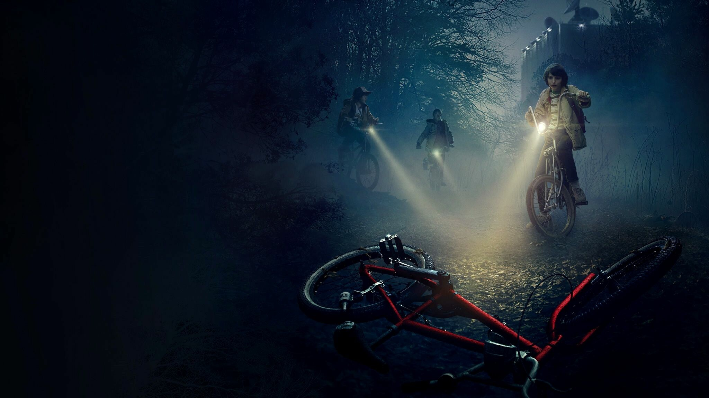The concept draws heavily from classic science fiction and horror, exploring themes of hidden realities, government secrecy, and cosmic terror. The dimension seems to be "alive," constantly evolving, and perhaps even sentient in some way.
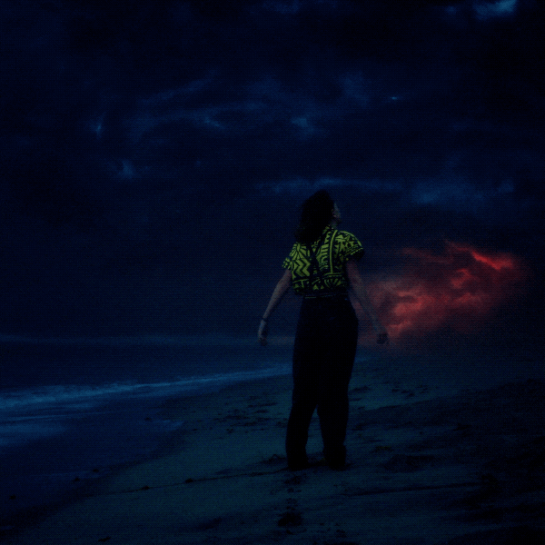One fan theory suggests the Upside Down is a twisted manifestation of trauma — a reflection of what Hawkins has buried beneath the surface. Others believe it predates the lab entirely and was simply uncovered rather than created.
Fan Favourite Characters
Eleven (Millie Bobby Brown)
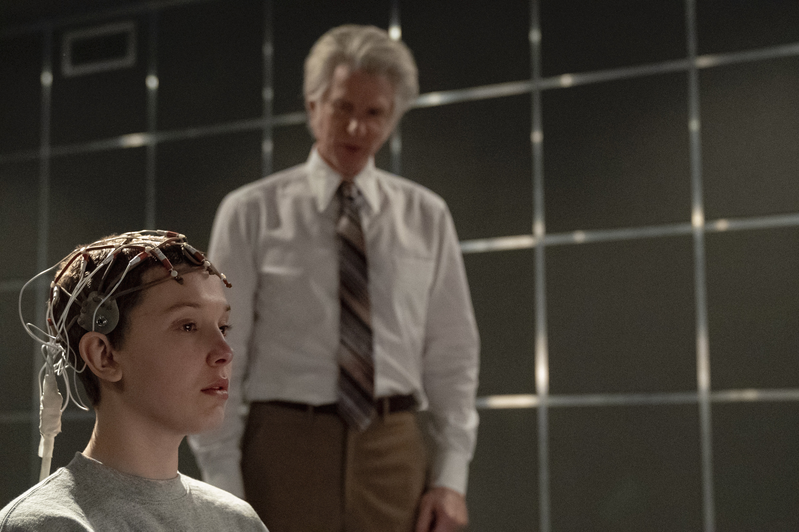Once a test subject in Hawkins Lab, Eleven escaped a life of isolation to become the heart of the group. With powerful telekinetic abilities and a quiet strength, she faces monsters from the Upside Down — and her own past. What makes her truly special isn’t just her powers, but her bravery, loyalty, and journey toward becoming her own person.
Jim Hopper (David Harbour)
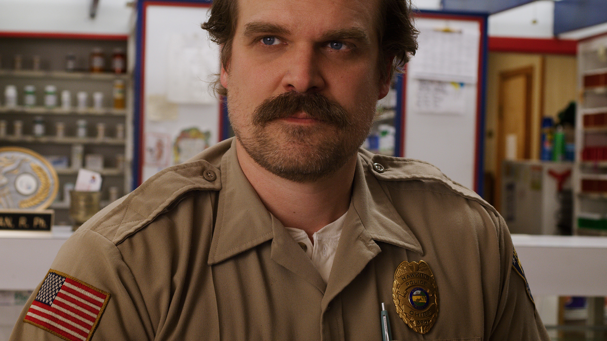The gruff police chief of Hawkins, Hopper is a complex character with a tragic backstory. Initially skeptical of the supernatural events, he becomes a father figure to Eleven and a key player in the fight against the Upside Down. His character development from a broken man to a hero is one of the show’s most compelling arcs.
Dustin Henderson (Gaten Matarazzo)
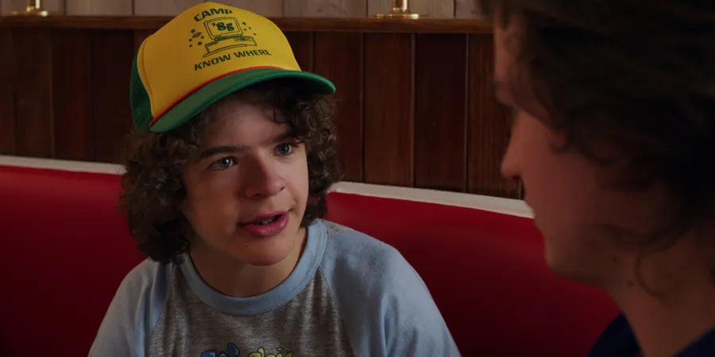Dustin is the lovable nerd of the group, known for his intelligence, humor, and distinctive lisp. His fascination with science and technology often leads to crucial discoveries that help the group navigate the dangers of the Upside Down. Dustin’s character brings a light-heartedness to the series, balancing the darker themes with his infectious enthusiasm and loyalty to his friends.
Steve Harrington (Joe Keery)
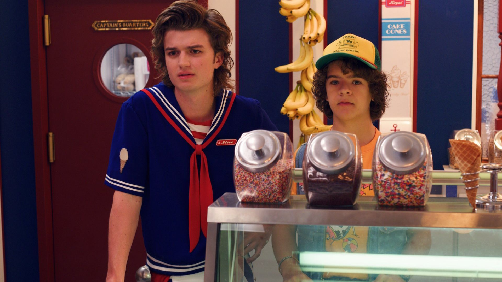Starting as a stereotypical high school jock, Steve undergoes significant character development throughout the series. From his initial role as Nancy’s boyfriend to becoming a beloved babysitter for the younger kids, Steve’s transformation into a selfless hero is one of the most satisfying arcs. His relationships with characters like Dustin and Robin showcase his growth and depth, making him a fan favorite.
Top 5 Moments of Eleven
- Defeating the Demogorgon in Season 1 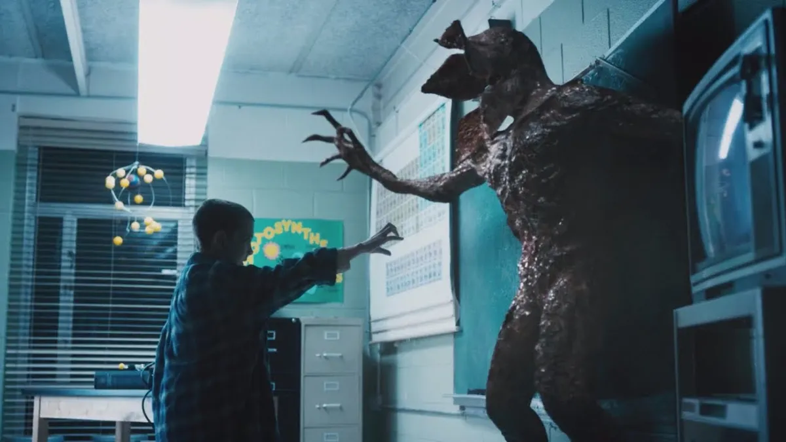
- Using her powers to close the gate in Season 2
- Her emotional reunion with Hopper in Season 3 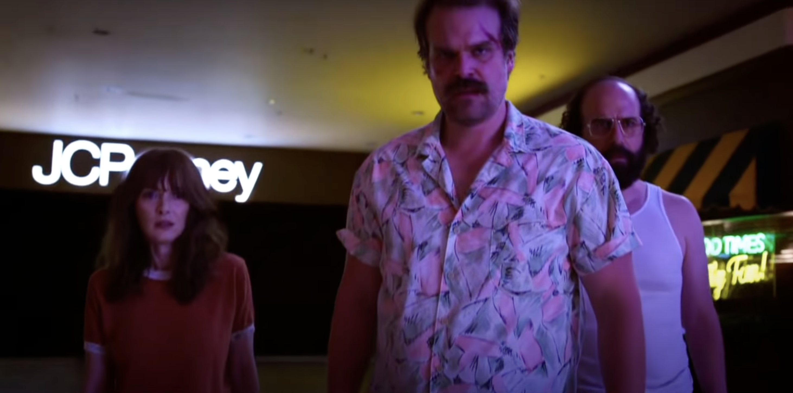
- Facing the Mind Flayer in Season 3 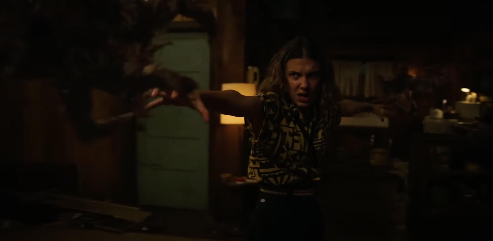
- Her powerful stand against Vecna in Season 4 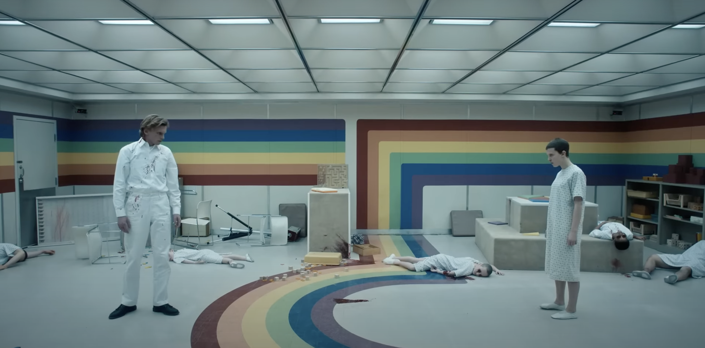

Demogorgon Origins
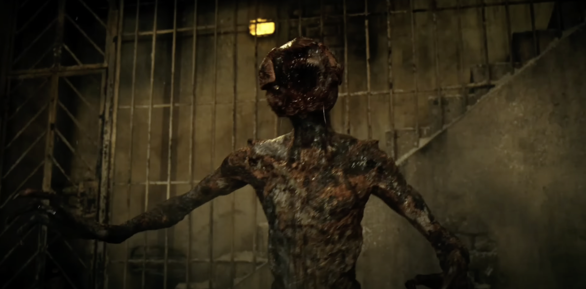The Demogorgon, one of the most iconic creatures from the Upside Down, is believed to have originated from the experiments conducted at Hawkins Lab. Initially thought to be a myth, it was first encountered by the kids in Season 1. The creature is a humanoid monster with a flower-like head and razor-sharp teeth, making it a terrifying presence in the series.
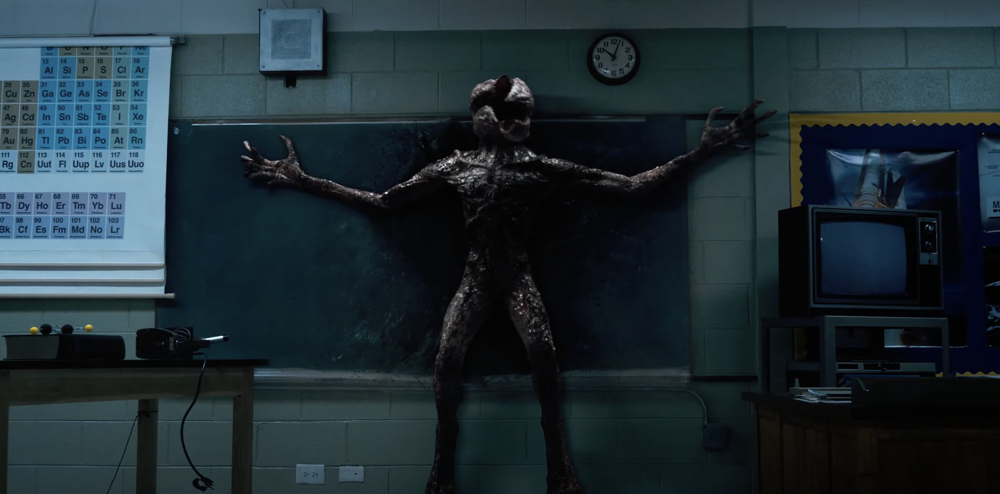The Demogorgon is not just a mindless beast; it exhibits intelligence and hunting instincts, often stalking its prey before attacking. Its connection to the Upside Down suggests that it is a product of the dark energy and twisted realities of that dimension. The creature's design and behavior draw inspiration from classic horror films, particularly the works of H.P. Lovecraft and Stephen King, blending elements of body horror with psychological terror.
Hawkins Lab
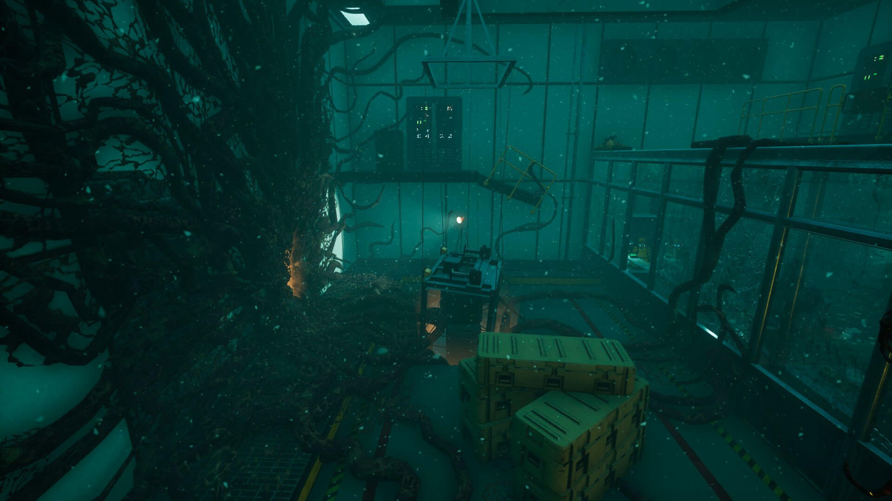Hawkins Lab, officially known as the Hawkins National Laboratory, is a central location in the series, serving as the epicenter of the supernatural events in Hawkins, Indiana. Initially a research facility, it became infamous for its unethical experiments on children, particularly Eleven, who was subjected to tests that enhanced her psychokinetic abilities.
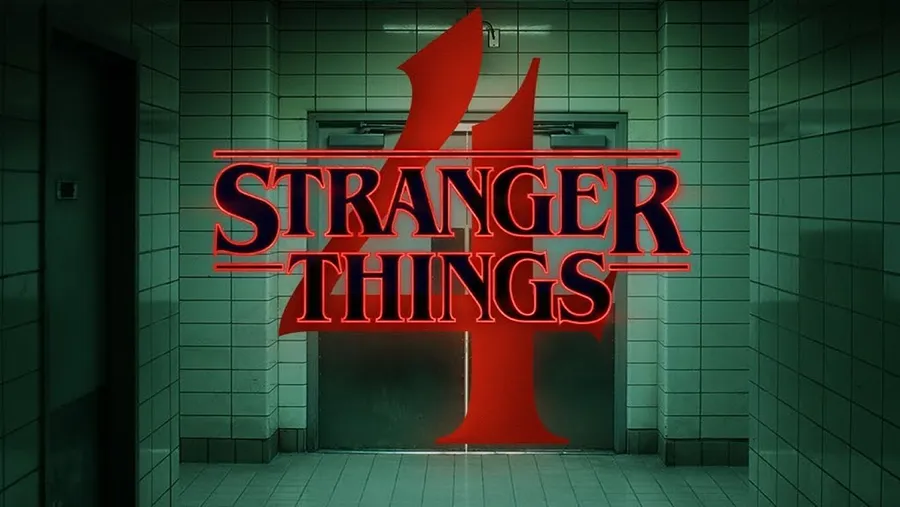The lab's experiments inadvertently opened a portal to the Upside Down, unleashing various creatures into the real world. The facility is shrouded in secrecy, with government officials and scientists working to cover up the truth about the supernatural occurrences. The lab's dark history is a key element of the plot, as it explores themes of government conspiracy, the ethics of scientific experimentation, and the consequences of tampering with forces beyond human understanding.
Steve Harrington's Character Development
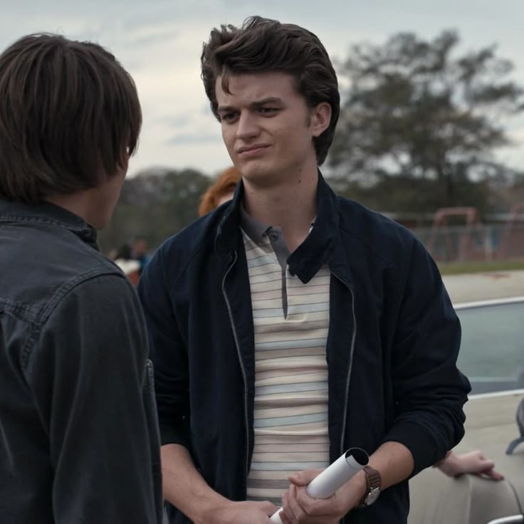Steve Harrington, portrayed by Joe Keery, is one of the most dynamic characters in "Stranger Things." Initially introduced as a typical high school jock and Nancy's boyfriend, Steve undergoes significant character development throughout the series. His transformation begins in Season 1 when he chooses to help Nancy and the kids fight the Demogorgon, showcasing his bravery and loyalty.
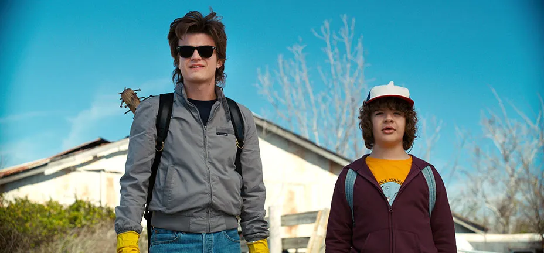In Season 2, Steve takes on a protective role, becoming a mentor to Dustin and the younger kids. His relationship with Dustin, in particular, highlights his growth from a self-centered teenager to a caring and responsible figure. By Season 3, Steve has fully embraced his role as the "babysitter," showcasing his maturity and willingness to put others before himself.
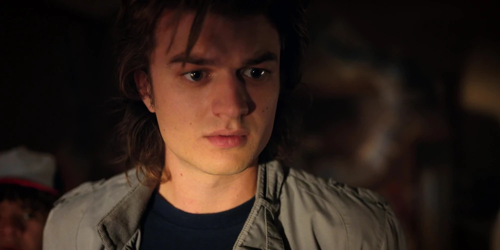Steve's character arc culminates in Season 4, where he faces Vecna and the Mind Flayer, demonstrating his courage and selflessness. His evolution from a shallow, popular kid to a beloved hero is one of the most satisfying aspects of the series, making him a fan favorite among viewers.
Every Ending Has a Beginning
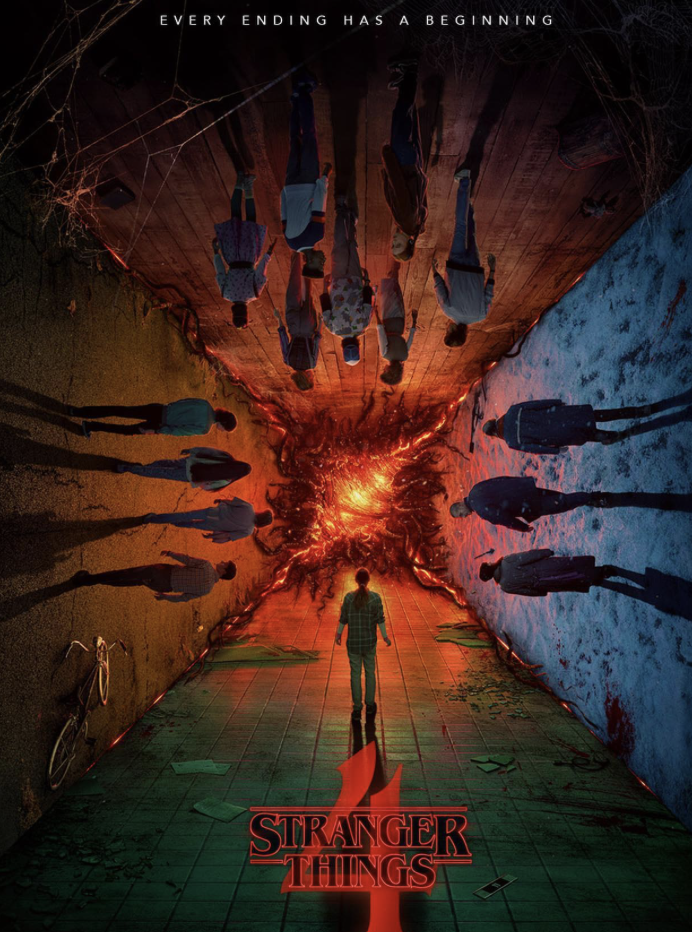"Stranger Things" masterfully intertwines its characters' pasts with the present, showing how their histories shape their actions and relationships. The series often explores themes of trauma, friendship, and the impact of the supernatural on everyday life. Each character's journey is deeply rooted in their experiences, whether it's Eleven's escape from Hawkins Lab, Hopper's tragic past, or Steve's transformation from a high school jock to a hero.
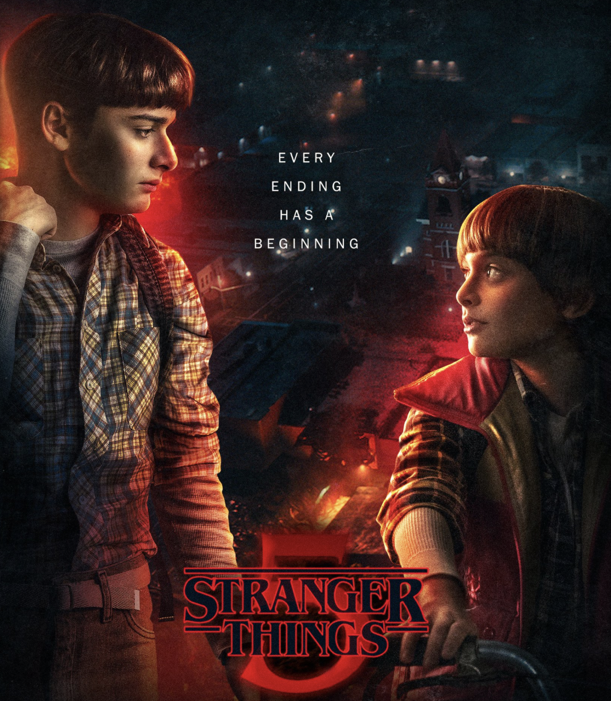The show also delves into the idea that every ending leads to a new beginning. The characters face numerous challenges and losses, but they always find a way to move forward, growing stronger and more resilient with each season. This cyclical nature of endings and beginnings is a central theme, emphasizing the importance of hope, friendship, and the bonds that hold them together in the face of adversity.